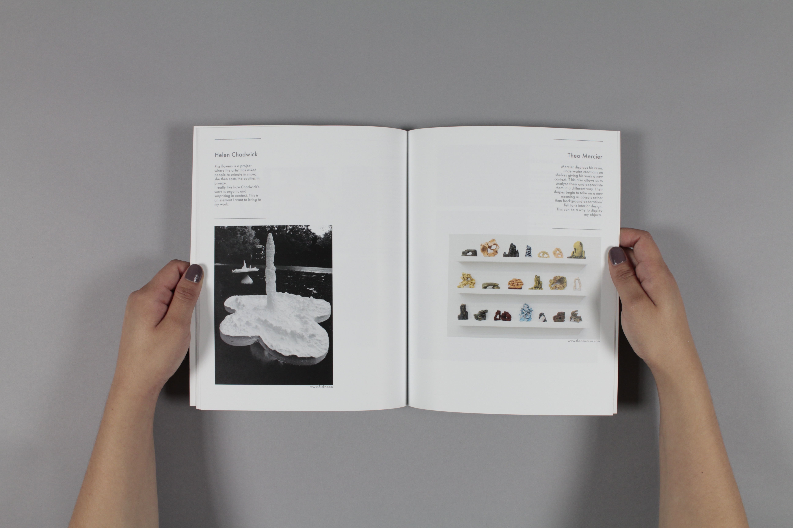

Sarah Sajid
*
Designer & Artist
sarah.sajid@network.rca.ac.uk

Containers - A book of artists that informed the project Containers
Crystals takes a simplistic and playful science project – growing sugar crystals, and seeks to depict the slow process.
Type family - Mashriki a display typeface using calligraphic Urdu traits such as writing from the right-hand side and applies it to the latin alphabet. Workshop ran by Or Type